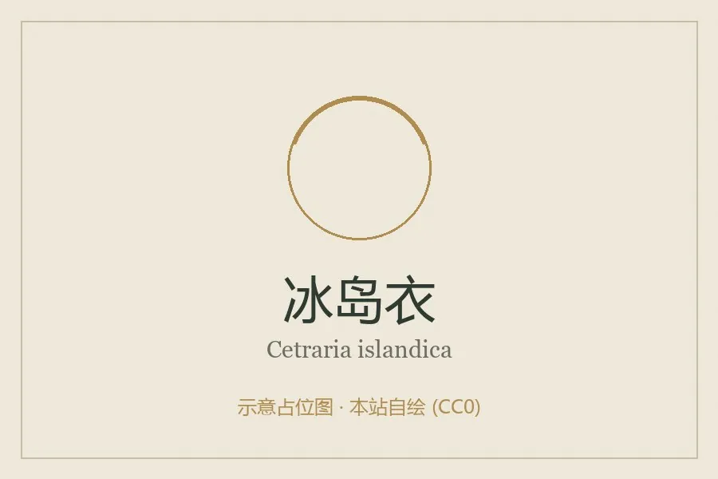

真菌 · 真菌界
冰岛衣 Cetraria islandica

梅衣科地衣，地衣体直立、边缘卷曲带纤毛，生于寒带苔原与高山，可食可药用，是冰岛传统食物与药材。
- 分类
- 门子囊菌门纲茶渍纲目茶渍目科梅衣科属冰岛衣属
- 栖息环境
- 寒带苔原、高山草甸与贫瘠土壤，耐寒耐旱
- 地理分布
- 北欧、冰岛、北美北部及中国西南、西北高山有分布
- 保护级别
- 暂无评估；生长缓慢，过度采集后恢复困难
物种志
冰岛衣的地衣体叶状至带状，直立或半直立，高 3–10 厘米，呈丛生状，表面橄榄绿至灰褐色，干燥时脆硬、遇水变软韧，边缘常卷曲并具短纤毛，有时带暗褐色子囊盘。地衣体由真菌与藻类共生构成，真菌提供结构，藻类进行光合作用。
冰岛衣生于寒带苔原、高山草甸与针叶林下的贫瘠土壤上，是典型的耐寒地衣，在北欧、冰岛、中国西南高山均有分布。它含地衣酸与多糖，味苦，历史上冰岛人将其浸泡去苦后煮粥、混入面粉充饥，故称“冰岛苔”；药用上用于润喉、健胃，是传统止咳糖浆的原料之一。它生长极慢，过度采集后恢复困难，采食与药用应限量。它也被用作染料与饲料补充。
形态与习性
- 地衣体叶状至带状，高 3–10 厘米，橄榄绿至灰褐
- 特征边缘卷曲具短纤毛，干时脆、湿时韧
- 共生真菌与藻类共生，藻类行光合作用
- 生境寒带苔原与高山贫瘠土壤
- 食用性浸泡去苦后可煮食，冰岛传统代粮
- 药用润喉健胃，传统止咳糖浆原料
趣味知识
- 冰岛衣是地衣，不是苔藓，由真菌和藻类共生组成。
- 它含地衣酸，味道很苦，冰岛人反复浸泡后才煮粥或混入面粉充饥。
- 地衣生长极慢，采一次可能要好多年才能恢复，采集必须限量。
- 它被用于传统止咳药，靠的是其中的多糖与地衣酸成分。